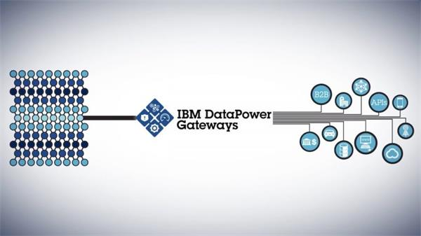

Event
Streams
Event streaming connects back-end systems and creates changing event streams to address data inaccessibility. New applications can subscribe to these event streams to build a local view of the data. Moving data closer to the application increases responsiveness.
Confluent Platform
Cloud Pak for Integration
IBM is partnering with the leading data-in-motion solution provider, Confluent, to support a broad range of integration styles and use cases. Confluent Platform is an enterprise-ready distribution of Apache Kafka that unifies real-time and historical events, enabling organizations to build modern, data-in-motion applications. The solution includes IBM support for Confluent software.
DataPower Gateway
Virtual Edition

IBM DataPower Gateway Virtual Edition combines the DataPower virtual gateway with additional modules and the IBM DataPower Gateway Operations Dashboard for monitoring and management in one easy-to-acquire package. It provides an extensible and modular architecture that provides enhanced security and integration capabilitie for mobile, API, and web workloads. For developers, it allows them to have a dedicated copy of a DataPower appliance for development and unit testing.
DataPower Gateway
Appliance
A purpose-built security and integration platform for a full range of mobile, web, app programming interface (API), service-oriented architecture (SOA), B2B and cloud workloads in a single multichannel gateway. It is an all-in-one DMZ-ready version with physical security for increased capacity and serviceability. It provides security assurance, simplified integration, reduced cost and complexity while lowering the burden of troubleshooting by providing real-time visibility of transactions and centralized operations.
Spectrum
Conductor

Event streaming connects back-end systems and creates changing event streams to address data inaccessibility. New applications can subscribe to these event streams to build a local view of the data. Moving data closer to the application increases responsiveness.
Spectrum
Symphony
IBM is partnering with the leading data-in-motion solution provider, Confluent, to support a broad range of integration styles and use cases. Confluent Platform is an enterprise-ready distribution of Apache Kafka that unifies real-time and historical events, enabling organizations to build modern, data-in-motion applications. The solution includes IBM support for Confluent software.
Spectrum
LSF
Event streaming connects back-end systems and creates changing event streams to address data inaccessibility. New applications can subscribe to these event streams to build a local view of the data. Moving data closer to the application increases responsiveness.
MQ
Cloud Pak for Integration
IBM is partnering with the leading data-in-motion solution provider, Confluent, to support a broad range of integration styles and use cases. Confluent Platform is an enterprise-ready distribution of Apache Kafka that unifies real-time and historical events, enabling organizations to build modern, data-in-motion applications. The solution includes IBM support for Confluent software.